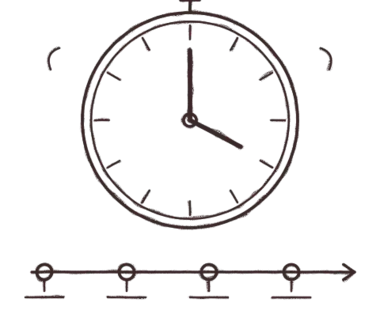
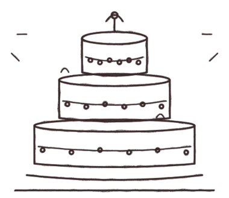
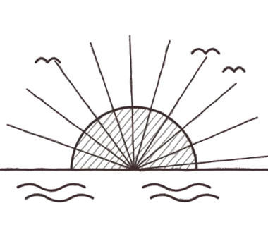
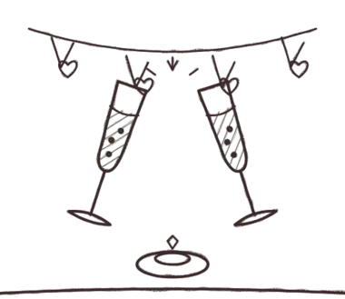
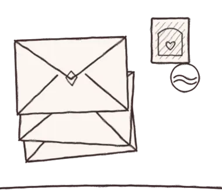
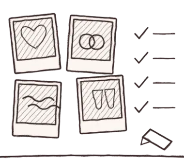
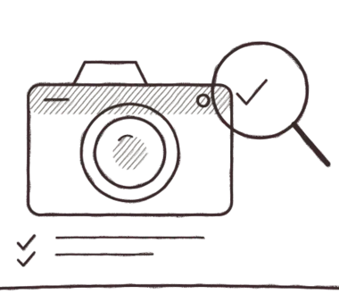

Herzlich willkommen, ihr Zwei
Eure Hochzeit, leicht geplant
Wir sind Bride & Light – Hochzeitsfotografie und Brautstyling von der Ostsee. Diese Helfer haben wir für euch gebaut, damit sich die Planung ein bisschen mehr nach Vorfreude anfühlt und ein bisschen weniger nach Tabellen.
- Kostenlos
- Ohne Anmeldung
- Daten bleiben in eurem Browser

Eure Planungs-Tools

Hochzeitsbudget-Rechner
Gesamtbudget eingeben, automatisch auf alle Posten verteilen, tatsächliche Kosten eintragen und den Überblick behalten.

Gästelisten-Planer
Gäste mit Begleitung, Kindern, Zusage und Essenswunsch erfassen – mit Zählung und Kosten pro Kopf.

Sitzplan-Planer
Tische anlegen, Gäste zuordnen und freie Plätze sehen – zugesagte Gäste lassen sich aus der Gästeliste übernehmen.

Getränkemengen-Rechner
Wie viel Sekt, Wein, Bier und Wasser braucht ihr? Mit Flaschen- und Kistenzahl.

Countdown & Checkliste
Hochzeitsdatum eingeben und sehen, was wann zu erledigen ist – von 12 Monaten vorher bis zum großen Tag.

Ablaufplan für den Hochzeitstag
Tagesablauf mit Uhrzeiten planen: von Getting Ready bis Party, zum Ausdrucken.

Hochzeitstorte-Rechner
Wie groß muss die Torte sein? Portionen, Etagen und Durchmesser berechnen.
Fotografie-Stunden-Rechner
Wie viele Stunden Fotobegleitung braucht ihr? Programmpunkte wählen und berechnen.

Goldene Stunde & Sonnenuntergang
Sonnenaufgang, Sonnenuntergang und Goldene Stunde für euren Hochzeitstag berechnen.
Tischkarten & Menükarten
Tischkarten und Menükarten gestalten und selbst ausdrucken, auch aus der Gästeliste.
Selbsttest: Welcher Hochzeitstyp seid ihr?
In 8 Fragen zu eurem Hochzeitsstil: von Boho bis Küstenlook.
Hochzeitsdatum-Finder
Samstage, Feiertage und besondere Daten für euer Hochzeitsjahr finden.

Hochzeitstag-Rechner
Silber, Gold, Perlen: Hochzeitstage und Jahrestage mit Datum berechnen.

Einladungs-Rechner
Wie viele Einladungen braucht ihr? Mit Kosten, Porto und Zeitplan.
Brautstrauß-Konfigurator
Saisonblumen für euren Hochzeitsmonat: nach Farbe und Stil auswählen.
Gastgeschenke-Rechner
Menge, Budget pro Gast und Bestellfrist für Gastgeschenke berechnen.
Packliste Hochzeit
Packlisten für Braut, Bräutigam, Trauzeugen und Flitterwochen zum Abhaken.

Foto-Wunschliste
Wunschmotive und Gruppenfotos sammeln und an den Fotografen schicken.

Selbsttest: Welcher Fotograf passt?
In 8 Fragen herausfinden, welche Art von Fotografie zu euch passt.

Hochzeitsplaner als PDF
Kostenlos zum Ausdrucken: Budget, Gäste, Checkliste, Tagesablauf.
Hochzeit auf Rügen und an der Ostsee: Ratgeber

Heiraten auf Rügen
Trauorte, Anmeldung beim Standesamt, beste Jahreszeit.
Strandhochzeit in MV
Was standesamtlich und frei am Strand möglich ist.
Hochzeitslocations Ostsee
Worauf ihr bei der Location achten solltet.
Kosten in MV
Kostenposten und Budget richtig planen.
Fotograf finden
10 Fragen vor der Buchung.
Winterhochzeit Ostsee
Licht, Kälte und Plan B.

Hochzeit 2027: Zeitplan
Was wann zu tun ist, wenn ihr 2027 heiratet.

Standesamt: Unterlagen
Welche Papiere ihr für die Anmeldung braucht.

Tipps für Paarfotos
Entspannt vor die Kamera: Posen, Licht, Ablauf.

Hochzeitsfotograf in MV
Orte und Fotospots in Stralsund, auf Rügen, Usedom und mehr.